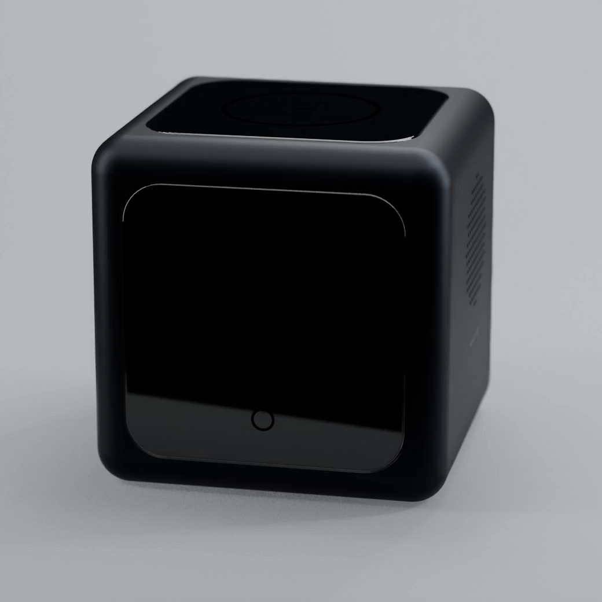

About NOVA Labs
テクノロジーに、
静けさを。
NOVA Labs は、人の集中と穏やかな時間を大切にするデバイスをつくる、小さなデザインスタジオです。
Mission
人が、自分の時間に
還れるように。
私たちのまわりには、便利さと引き換えに注意を奪うものがあふれています。NOVA Labs が目指すのは、テクノロジーを「主役」ではなく「よき脇役」に戻すこと。必要なときにだけそっと手を貸し、それ以外は静かに見守る。そんな道具を、まずは机の上から届けていきます。
Philosophy
「静かなAI」の、3つの約束。
AIが賢くなるほど、人の時間に入り込むことも簡単になります。だからこそ私たちは、AIとの距離感を、ていねいに設計したいと考えています。
-
01
話しかけすぎない
AIは、呼ばれたときに応えれば十分です。こちらから声をかけるのは、本当に必要なときだけ。あなたの思考を、途中で遮りません。
-
02
光で伝える
音や通知で割り込む代わりに、視界の端でやわらかく灯る光で状態を伝えます。気づきたいときに、気づける距離で。
-
03
必要なときだけ支える
先回りしすぎず、決めるのはいつも使う人。AIは答えを押し付けるのではなく、考えるための余白をつくる存在でありたいと考えています。
Our Name
小さな光が、
明日を少し明るくする。
「NOVA」は、ラテン語で「新しい」を意味する言葉。天文学では、夜空で急に明るく輝きはじめる星「新星」を指します。机の上の小さな光が、あなたの明日を少しだけ明るくする。その思いを、ひとことに込めました。
Small Device. A Bigger Tomorrow.

Craft
使わないときも、
美しくあること。
道具は、使っている時間よりも、置かれている時間のほうがずっと長いもの。電源を切ったときにも風景になじむかどうかを、私たちは同じくらい大切にしています。
余白をつくる
表示する情報は、いつも最小限に。画面に映すのは「今やること」だけ。空いた余白は、あなたが考えるための場所です。
風景になじむ
主張しすぎない色と、やわらかなかたち。仕事机にも、勉強机にも、アトリエにも、静かに置けるデザインを目指します。
長く寄り添う
流行に左右されない、シンプルな佇まい。毎日そばに置いて、何年も使い続けたくなる道具をつくります。
Profile
ブランド概要
| ブランド名 | NOVA Labs（ノヴァ ラボ） |
|---|---|
| タグライン | Small Device. A Bigger Tomorrow. |
| 設立 | 2026年 |
| 事業内容 | 集中と穏やかな時間のための、AIデスクデバイスの企画・デザイン |
| 製品 | NOVA CUBE（AI デスクコンパニオン） |
※ NOVA Labs は AI実践プロジェクトとして制作した架空のブランドです。記載の内容はすべて架空のものです。